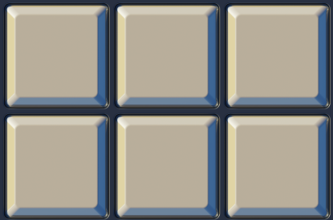

Unopened cell options
Variations on the unopened (covered) cell, based on the title image. Each option is shown at the sizes the game uses: a big ring cell (148px), normal cells (49px) and tiny nested cells (16px), next to opened numbers and flags. Opened cells and flags are drawn the way the game draws them today; only the covered cell changes.

Reference: unopened cells in the title image
- Flat grey-beige face
#B9AE9B - Narrow mitred bevel: warm cream left
#E0D4A6, light top#D1CBBB - Blue right
#3E6694and blue-grey bottom#6C849C(reflected surroundings) - Small corner radius, thin dark outline, navy gaps
#283041, a white glint at the top-left corner